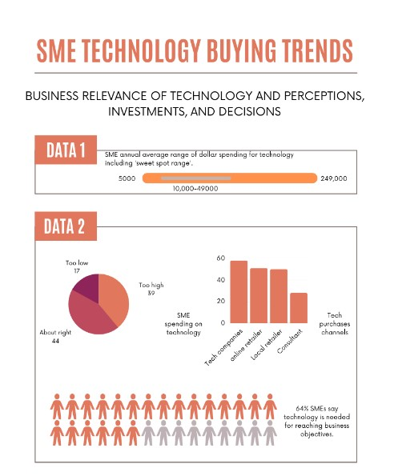
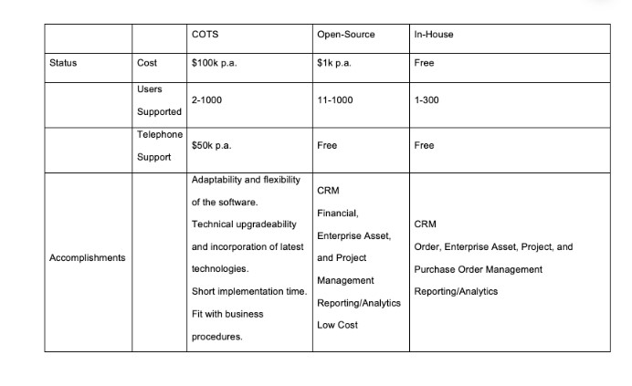
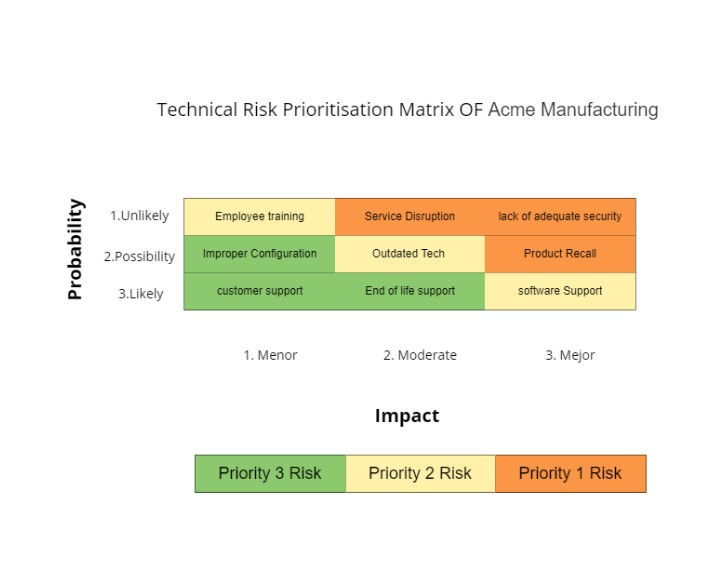
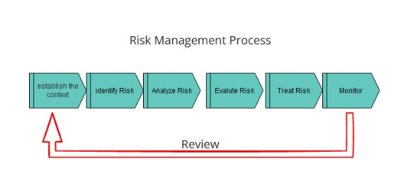

<!DOCTYPE html>
<html lang="en">

  <head>
    <meta charset="utf-8">
    <meta content="width=device-width, initial-scale=1.0, maximum-scale=1.0, user-scalable=0" name="viewport">

    <title>Isioma Vina Okafor Tolofari ePortfolio - Module 1</title>
    <meta content="" name="description">
    <meta content="" name="keywords">

    <!-- Favicons -->
    <link href="assets/img/favicon.png" rel="icon">
    <link href="assets/img/apple-touch-icon.png" rel="apple-touch-icon">

    <!-- Google Fonts -->
    <link
      href="https://fonts.googleapis.com/css?family=Open+Sans:300,300i,400,400i,600,600i,700,700i|Raleway:300,300i,400,400i,500,500i,600,600i,700,700i|Poppins:300,300i,400,400i,500,500i,600,600i,700,700i"
      rel="stylesheet">

    <!-- Vendor CSS Files -->
    <link href="assets/vendor/aos/aos.css" rel="stylesheet">
    <link href="assets/vendor/bootstrap/css/bootstrap.min.css" rel="stylesheet">
    <link href="assets/vendor/bootstrap-icons/bootstrap-icons.css" rel="stylesheet">
    <link href="assets/vendor/boxicons/css/boxicons.min.css" rel="stylesheet">
    <link href="assets/vendor/glightbox/css/glightbox.min.css" rel="stylesheet">
    <link href="assets/vendor/swiper/swiper-bundle.min.css" rel="stylesheet">
    <link href="assets/vendor/highlight/css/monokai.min.css" rel="stylesheet">

    <!-- Template Main CSS File -->
    <link href="assets/css/module_style.css" rel="stylesheet">

    <!-- =======================================================
  * Template Name: iPortfolio - v3.7.0
  * Template URL: https://bootstrapmade.com/iportfolio-bootstrap-portfolio-websites-template/
  * Author: BootstrapMade.com
  * License: https://bootstrapmade.com/license/
  ======================================================== -->
  </head>

  <body>

    <!-- ======= Mobile nav toggle button ======= -->
    <i class="bi bi-list mobile-nav-toggle d-xl-none"></i>

    <!-- ======= Header ======= -->
    <header id="header">
      <div class="d-flex flex-column">

        <div class="profile">
          
          <h1 class="text-light"><a href="index.html">Isioma Vina Okafor Tolofari </a></h1>
          <div class="social-links mt-3 text-center">
            <a href="https://twitter.com/vina21320150" class="twitter"><i class="bx bxl-twitter"></i></a>
            <a href="https://www.facebook.com/iokafortolofari" class="facebook"><i class="bx bxl-facebook"></i></a>
            <a href="https://www.instagram.com/ivisioma2020/?hl=en" class="instagram"><i
                class="bx bxl-instagram"></i></a>
            <!-- <a href="#" class="google-plus"><i class="bx bxl-skype"></i></a> -->
            <a href="https://www.linkedin.com/in/isi-vina-o-5819244a/" class="linkedin"><i
                class="bx bxl-linkedin"></i></a>
          </div>
        </div>

        <nav id="navbar" class="nav-menu navbar">
          <ul>
            <li><a href="index.html" class="nav-link scrollto active"><i class="bx bx-home"></i> <span>Home</span></a>
            </li>
            <li><a href="index.html#about" class="nav-link scrollto"><i class="bx bx-user"></i> <span>About</span></a>
            </li>
            <li><a href="index.html#portfolio" class="nav-link scrollto"><i class="bx bx-book-content"></i> <span>List
                  of Modules</span></a></li>
            <li><a href="index.html#contact" class="nav-link scrollto"><i class="bx bx-envelope"></i>
                <span>Contact</span></a></li>
          </ul>
        </nav><!-- .nav-menu -->
      </div>
    </header><!-- End Header -->


    <main id="main">

      <!-- ======= Breadcrumbs ======= -->
      <section class="breadcrumbs">
        <div class="container">
          <div class="d-flex justify-content-between align-items-center">
            <h2>MODULE 3</h2>
            <ol>
              <li><a href="index.html">Home</a></li>
              <li>Module 3</li>
            </ol>
          </div>
        </div>
      </section><!-- End Breadcrumbs -->

      <section class="inner-page">
        <div class="container">
          <h1>Information Risk Management</h1>
          <br>
          <p>This module is designed to explain the increase dependency on proactive defense of Cyber Security and
            deeper understanding of modern information and system protection technology and methods  (Information Risk Management).
            <p> A Security Risk Management (RM) strategy is essential because it enables companies to identify and implement security requirements in an economical manner. Because security 
              threats are so numerous, it is impossible to address all of them since <li> All technological security solutions cost money.</li> 
            <li> Companies have limited resources</li> It is 
              imperative that companies adopt only those solutions that will result in a significant Return on Investment (ROI). Analyzing costs and risks involves comparing the costs of a 
              solution with the risks associated with it.
              A successful cyberattack could cause business disruptions, including the cost of not using it.
              A security risk management program ensures that a company's goals are aligned between its business and technology (IT) strategies.</p>
            <h3></h3>
          </p>
          <ul>
            <li>Looked into the professional roles, test, and analyze systems to keep data and information safe from
              hackers and other external threats.</li>
            <li>key role in securing information systems, by monitoring, detecting, investigating, analyzing, and
              responding to security.</li>
            <li>Develop an understanding of the core concepts in Cyber Security such as cryptography, penetration
              testing and ethical hacking.</li>
            <li>Engaged with programming concepts and practices necessary for facilitating security-based solutions to
              identified problems.</li>
            <li>Core Cyber Security subjects like cryptography, ethical hacking and Ability to implement security
              information system.</li>
            <li>Develop the ability to implement a secure information system using the principles and concepts of
              object-oriented approaches to solving a given problem, such as information system design and web
              development.</li>
            <li>Discuss the ethics of professional development highlighting major ethical-social-corporate
              responsibilities underpinning the concepts of threats, securities and global impacts prevailing the recent
              technological innovations and future applications.</li>
            <li> A deep understanding of Ethics — moral principles that governs cyber security</li>
          </ul>

          <h4>Skills And knowledge Acquired During This Module</h4>
          </p>
          <ul>
            <li>Understand the key Essential Steps of A Risk Management Process.</li>
            <li>Identify the Risk.</li>
            <li>Analyze the Risk.</li>
            <li>Evaluate or Rank the Risk.</li>
            <li>Treat the Risk.</li>
            <li>Understand the key Essential Steps of A Risk Management ProcessMonitor and Review the RiskAppreciate the competencies required to be able to address Cyber Security issues.</li>
            <li>Gain awareness of the ethical and governance frameworks around information systems security and data
              protection acts.</li>
            <li>Developed an awareness of the implications of security breaches.</li>
            <li>Evaluated available techniques and technologies at database and metadata levels dealing with privacy and
              data disclosure.</li>
            <li>Critically evaluate the implications of vulnerabilities and threats in software and networks.</li>
            
          </ul>

        </div>
      </section>
      <br>

    </div></br>
  </details>

</div>


</br>
<!-- ======= Unit 1 Section ======= -->
<div id="skills" class="skills section-bg">
  <div class="container">

    <details>
      <summary>
        <h2>Unit 1</h2>
      </summary>
      

      <p>
            <h4><b>Information Risk Management: Definitions, Standards and Approaches</b></h4>
            <p> Risk is an interdisciplinary and multifaceted concept and, therefore, its definition cannot be defined explicitly. Risk is present in every aspect of a person's life, especially
               in economics and management. In other words, there are different types of risks and different types of risk management. For instance, risk is a measurable variable.</p>
            <ul>
              <p> Information resource management involves identifying weaknesses and threats to information resources an organization uses in order to achieve business objectives and deciding 
                which countermeasures to take in order to reduce risk to acceptable levels, thereby increasing the probability of success and reducing the likelihood of failure.</p>
              <p> 
                In order to achieve a high level of risk management, IT systems that store, process, or transmit information should be more secure. In addition, management should be able to make
                 informed decisions about risk man-management. This will enable them to justify expenditures made as part of an IT budget, as well as assist management in defining the objectives
                  of risk management. By virtue of the documentation produced by the risk management process, authorizing (or approving) the IT systems.</p>
              
                      

                  <br>
          <P>Required Reading
            <p>SP 800-30. Risk Management Guide for Information Technology Systems 
                <li>Chapter 1.</li>
              <li> Chapter 2.</li>
            <li>  Chapter 3.</li>
            <p> The main concepts that underpin Information Security Management, the so-called '3 tenets of security' (Campbell, 2016) are:</p>
             <li> confidentiality</li>
             <li> integrity</li>
             <li>availability</li>
              <li> Non-Repudiation</li>

              <h6><b>Additional important principles include threats and vulnerabilities. </b></h6>
              <p> ISO/IEC 27000:2012 defines a threat as “the potential cause of an unwanted incident, which may result in harm to a system or organisation”. Threats
                 can be physical (i.e. about buildings or people) or technical (i.e., technical assets – either hardware or software) (Essex, 2022).</p>
                 <h6><b>Reference </b></h6>
                 Essex (2022). Definitions Standard and Approaches. [online] University of Essex. Available at: https://www.my-course.co.uk/Computing/Cyber%20Security/IRM/IRM%20Lecturecast%201/content/index.html#/ [Accessed 24 Jul. 2022].
                 ‌
                 <details>
        
        </p><br>
      </p>
    </details>
    <hr>
    <details>
      <summary>
        <h6><b>GROUP 2 Team Contract</b></h6>
      </summary>
                        <center>


                            <p></p>
    
                         <p></p>
    
                          <p></p>
                          </center>
    


                          </p><br>
                        </p>
                      </details>
                      <hr>
                      <details>
                        <summary>
                          <h6><b>Unit Reflection</b></h6>
                        </summary>
                        <p> Risk management is the process of identifying risk, assessing risk, and reducing risk to an acceptable level.
                          Organizations use risk assessment to determine the extent of the potential threat, vulnerabilities, and the risk 
                          associated with an information technology (IT) system. The output of this process helps to identify appropriate controls
                           for reducing or eliminating risk during the risk mitigation process. In most organizations, IT systems will continually be
                            expanded and updated 
                          (National Inst Of Standards And Technology Gaithersburg Md, 2002)

                           <h6><b>Reference</b></h6>
                          National Inst Of Standards And Technology Gaithersburg Md (2002). Risk Management Guide for Information Technology Systems. United States: National Inst of Standards and Technology Gaithersburg Md.
‌
                          
                          .</p>
        </div>
        </div><!-- End Unit 1 Section -->
  
        </br>
        <!-- ======= Unit 2 Section ======= -->
        <div id="skills" class="skills section-bg">
          <div class="container">
  
            <details>
              <summary>
                <h2>Unit 2</h2>
              </summary>
              

              <p>
              <h4>COLLABORATIVE LEARNING DISCUSSION 1</h4>
              <h4>Topic:</h4> Read the Spears & Barki (2010) article (Unit 2 reading list) then discuss the following:

              <li>How did the authors use both Qualitative and Quantitative assessment approaches? What benefits did each approach yield?</li>
              What do the authors list as the advantages of involving users in the risk management process?</li>
              Based on the findings of the research,
            <li> how will the lack of user access affect the risk assessment you will carry out as part of your assessment?</li>
                <li> will it affect the choice of Qualitative vs. Quantitative assessment methods you utilise?</li>
                <li>how might you mitigate any issues encountered?</li>
          
                  <p></p>

                  <hr>
                  <details>
                    <summary>
                      <h6><b>MY INITIAL POST</b></h6>
                    </summary>

              
              <p> According to Spears & Barki's (2010) article, qualitative and quantitative approaches were used to analyse user participation in SRM. This article aims to examine user 
                participation in information security risk management in the context of regulatory compliance via a multi-method study at the organisational level. The authors tested the 
                theoretical model they had developed during the Qualitative research phase using Quantitative methods. In this way, the quantitative and qualitative methods combined produce a 
                vital context and allow the study to be broadly tested (Spears and Barki, 2010). </p><br>

              <p>User participation raises organisational awareness of security risks and controls within business processes. The need for regulatory compliance may encourage user participation 
                in SRM within targeted business processes. Security managers can harness the opportunity to engage users as an opportunity to better align security measures with business 
                objectives. As a result of SRM, users' awareness of security risks and controls in business processes improved, resulting in perceived improvements in control development and 
                performance. SRM awareness within a business process influences security controls' perceived performance positively(Spears and Barki, 2010). </p><br>
              <p>To preserve the global trust of cyberspace and the avoidance of excessive

                The article points out that user engagement is crucial to IS security, as it provides the expertise needed to strengthen security measures. Participation from users is another 
                way to get them involved in corporate operations and is crucial to secure sensitive data. Thereby engaging users to  contribute and improved security control performance through
                 increased awareness and a better alignment between IS security risk management and the business environment(Spears and Barki, 2010)</p></b><br>

              <p>References</p><br>

              Spears, J.L. and Barki, H. (2010b). User Participation in Information Systems Security Risk Management. MIS Quarterly, 34(3), p.503. doi:10.2307/25750689.</p><br>


              <p>
              <h6>Peer Response by  Osarodion Samuel Tolofari</h6>
              Great review Isioma, to add to add to your detailed points,

                       The importance of qualitative and quantitative information risk approaches should never be understated because they are a long-term cycle. All steps must be taken; risk 
                       identification alone will not save a company from going out of business. A qualitative research design has a flexible structure because it can be constructed and 
                       reconstructed to a greater extent. Thus, using qualitative methods can result in a thorough and appropriate analysis of an issue. For example, rather than discovering and 
                       interpreting the meanings that people bring to their actions, research focuses on aspects of social behaviour that can be qualified and patterned (Rahman, 2017).

                      Risk identification should be done with greater care, and all risks must be identified and treated carefully. It is critical to evaluate and assess potential threats, 
                      vulnerabilities, and potential damage. This assessment should be followed by the implementation of necessary controls for cost-effectiveness and risk reduction. A cost 
                      analysis is required to determine which controls are most appropriate. Its results can assist managers in implementing the controls that produce the greatest benefit for 
                      the organisation (Rahman, 2017).

                          The management of risks helps managers improve the business process and to better control business practices. Good risk analysis and the right measures will not only
                           prevent the organisation from disappearing from the market but also make it easier to achieve the desired results. </p><br>
              <p>References List</p><br>

              <p> Rahman, S. (2017). The advantages and disadvantages of using qualitative and quantitative approaches and methods in language ‘Testing and Assessment’ Research: A literature review. Journal of Education and Learning, 6(1), pp.102–112. doi:10.5539/jel.v6n1p102.<p><br>
              
              </details>

                <hr>
    <details>
      <summary>
        <h6><b>User Participation in the Risk Management Process</b></h6>
      </summary>
                
    

   <p> <center>
 

    <p></p>

<p></p>
<p></p>
<p></p>
<p></p>


</center>
</p>
     
</p>
</details>

<hr>
<details>
  <summary>
    <h6><b>Unit Reflection</b></h6>
  </summary>

      <p> This unit examines user participation in information systems security risk management and its influence in the context of regulatory compliance via a multi-method study at the 
        organizational level. Eleven informants across five organizations were interviewed to gain an understanding of the types of activities and security controls in which users participated 
        as part of Sarbanes-Oxley compliance. Analysis of the data collected in a questionnaire survey of ISACA, a professional association specialized in information technology governance, 
        audit, and security, supported the research model. The findings of the two studies converged and indicated that user participation improved security control performance.(Spears and Barki, 2010)</p>
        
        <h6><b>Reference</b></h6>
        Spears, J.L. and Barki, H. (2010). User Participation in Information Systems Security Risk Management. MIS Quarterly, 34(3), p.503. doi:10.2307/25750689.
        ‌
         <center>
         
				</center>
				</p>
        
      </div>
      </div><!-- End Unit 2 Section -->

      </br>
      <!-- ======= Unit 3 Section ======= -->
      <div id="skills" class="skills section-bg">
        <div class="container">

          <details>
            <summary>
              <h2>Unit 3</h2>
            </summary>

            <h4><b> An Introduction to Risk and the System Development Life Cycle </b></h4>
            <p>
            <h6>A software engineering method called object-oriented analysis and design (OOAD) involves creating object-oriented models that abstract key aspects of the target system and using the models to guide the development process. Notations and concepts in the model are intended to represent design decisions with a large impact on the final system.
              In addition to fostering better product quality, it also encourages stakeholder participation and communication throughout the development process. 
              
              The goal of this unit is to provide a detailed overview of the SDLC and the different implementation methodologies. As well as 
              explaining how risks affect SDLC, you will be able to explain how risk management can improve the process. In a chosen SDLC 
              methodology, describe how risks can be mitigated.
                  

            </ul>
        
          <hr>
          <details>
            <summary>
              <h6><b>A Status Report for Acme Manufacturing’s ERP Adoption </b></h6>
            </summary>
                   <center>
              <h6><b>A Status Report for Acme Manufacturing’s ERP Adoption</b></h6>
               <p> <h6><b>  Information Risk Management </b></h6> 
                <h6><b> MSc Cyber Security</b></h6> 
                <p></p>
                <h6><b> Group Two  </b></h6>
                  <h6><b> Osarodion Samuel Tolofari</b></h6>
                    <h6><b> Jurbe Jubet</b></h6>
                      <h6><b>Andrijana Klacar</b></h6>
                        <h6><b>Isioma Vina Okafor-Tolofari</b></h6>
                          <h6><b> Jonathan Ashmore</b></h6>
                
                
                            <h6><b> University of Essex </b></h6>
                               <p></p>
                              <h6><b>4 July 2022</b></h6>
               <a> </a>

            </center>
            <p></p>
            <h6><b>1.0 Introduction</b></h6>
            <p>This report will examine three enterprise resource planning (ERP) solutions that could potentially satisfy Acme’s Manufacturing 
              needs; a commercial-off-the-shelf (COTS), an open-source, and an in-house created solution. </p>

              <h6><b>Assumptions </b></h6>

             <u> Financial Status and Stability</u>
             <p>Acme’s net profit is £25 million and has an annual turnover of £15 million (Table 1.1 & Appendix A). The company has financial stability 
              ensured due to building and maintaining customer relationships, managing cash flow, bills, and debts (Mazars, 2021).</p>

              <p></p>
              <p>Table 1.1: Financial Status of companies based on enterprise category (Banerjee, 2014)</p>

              <u>Risk Appetite</u>
              <p>Acme maintains strict controls to protect its technology infrastructure from external threats and has zero tolerance for unauthorised access 
                to systems and confidential data that could potentially lead to business continuity termination (Reciprocity, 2022).</p>

                <u>IT Capabilities</u>
                <p> Acme can identify IT needs, improve business processes; aiming to do so cost-effectively, and supply constant maintenance and 
                  support for IT-based systems (Karimi et. al., 2007). In addition, CompTIA (2019) also published a report identifying the latest
                   SME trends in technology that highlight SMEs' decisions and perceptions of technology relevant to business objectives 
                   (See Infographic 1).</p>

                   <p></p>

                   <p> Infographic 1: Relevance of Technology in Businesses (CompTIA, 2019)</p>

                   <h6><b>Status </b></h6>
                   <p> The company follows a functional departmentalisation with five departments: retail operations, manufacturing and sourcing, 
                    logistics, operations and product design (Weedmark, 2019). SMEs often use this type of company structure (Kenton, 2021a). 
                    Acme being a SME, uses Excel Spreadsheets for accounting needs, resource planning and management (Financial Post, 2021).</p>

                    <u> Business Risks </u>

                    <p> Some of the key business risks that Acme might have to overcome are strategic, compliance/regulatory, financial, operational, 
                      and reputational risks (NI Business Info, N.D.a; Kenton, 2022).</p>
                      <li> Strategic Risk </li>
                      Introduced due to directors’ fundamental decisions on the business’s objectives (ACCA, 2022)

                      <li> Compliance Risk</li>
                      Appears when businesses violate established laws and/or regulations (Hayes, 2022).

                      <li> Regulatory Risk</li>
                      Arises when laws and regulations change, leading to security, business, sector, or market being impacted by these changes (Hayes, 2022).
                          

                      <li> Financial Risk</li>
                        Instabilities and losses in the market, movements in stock prices, currencies, etcetera can be reasons financial risk arises (NI Business Info, N.D.b).
                        
                      <li> Operational Risk</li>
                        Arises from business’s uncertainties and hazards when attempting to complete daily activities within a given field or industry (Segal, 2020).
                        
                        
                        
                      <li> Reputational Risk</li>
                        Considered a threat or danger to a business’s good name or standing (Kenton, 2021b).
                        
                      <li> Security Risk</li>
                        “arise from the loss of confidentiality, integrity, or availability of information or information systems” (NIST, 2021)
                         <p></p>
                        <p>The accomplishments and critical issues of the COTS and open-source solutions in Table 1.2 were based on NetSuite’s software and Wrike’s, respectively (Capterra, 2020). </p>
                        
                        <p></p>

                        <p></p>
                        <p> Table 1.2. Status Report on COTS, open-source, and In-house Solutions.</p>
                      
                         <P> Graphical respresentation of the services by the COTS, open-source, and in-House Solution</P>
                        <p></p>

                        <p></p>
                                 
                        <p> Haddara’s and Zach’s (2011) literature review on ERP on SMEs globally highlights issues and topics in each phase of the software life-cycle as shown in Infograph 2.
                        </p>
                       

                        <p></p>


                        <p></p>
                         <p> Infographic 2. Literature Review Summary</p>


                         <p> Figure 1 shows the proposed deployment process flow and timelines for Acme (online.visual-paradigm.com, N.D.)
                        </p>
                        <p></p>

                        <p> Figure 1. process flow and timelines (Edited from online.visual-paradigm.com, N.D.)
                        </p>

                        <h6><b>Conclusion </b></h6>

                        <p> This report evaluates the three ERP solutions; commercial-off-the-shelf (COTS), open-source, and in-house, based on key
                           elements in the framework, including the involvement of organisational levels, critical success factors, implementation 
                           methodology and process, and relevant risks. COTS solutions are considered to be more suitable for SMEs and easier to 
                           manage, as well as projects to replace the company's deprecated systems, making them more efficient, and keeping customers
                            satisfied (Bank for Canadian Entrepreneurs, N.D.; Glenn & Shyam, 2004). 
                        </p>

                        <p> As Acme Manufacturing is a SME and based on this report, COTS solution seems to satisfy the company’s requirements and
                           needs (see Appendix A). Although each solution is followed by risks, COTS offers adaptability, flexibility, potential 
                           technical upgradeability, and integration of the latest technologies from the proposed framework (Anderson, 2021). </p>
                               

                           <h6><b>References </b></h6>
                           <li>CompTIA. (2019) SMB Techn Buying Trends Among Small & Medium-Size Businesses. Available from: https://www.comptia.org/content/research/smb-technology-buying-trends [Accessed 25 June 2022].</li>
                           <li>Haddara, M. & Zach, O. (2011) ‘ERP Systems in SMEs: A Literature Review’, Proceedings of the Annual Hawaii International Conference on System Sciences. Kauai, HI, 4-7 January. New York: IEEE Xplore. 1-10. doi: 10.1109/HICSS.2011.191.</li>
                            <li>Reciprocity (2022) Risk Appetite Statement Examples. Available from: https://reciprocity.com/blog/risk-appetite-statement-examples [Accessed 25 June 2022].</li>
‌                                  <li>Karimi, J., Somers, T. & Bhattacherjee, A. (2007) The Role of Information Systems Resources in ERP Capability Building and Business Process Outcomes. Journal of Management Information Systems 24(2): 221-260.</li>
                               <li> Sava, R., Mârza, B. & Eşanu, N. (2013) Financial Reporting for SMEs - Past and Perspectives. Procedia Economics and Finance 6(1): 713-718</li>
                                <li>Kenton, W. (2022) Business Risk. Available from: https://www.investopedia.com/terms/b/businessrisk.asp [Accessed 23 June 2022].</li>
                                  <li>NI Business Info. (N.D.a) Risk Management: Types of risk your business faces. Available from: https://www.nibusinessinfo.co.uk/content/types-risk-your-business-faces [Accessed 23 June 2022].</li>
                                    <li>ACCA. (2022) Strategic and Operational Risks. Available from: https://www.accaglobal.com/us/en/student/exam-support-resources/professional-exams-study-resources/strategic-business-leader/technical-articles/strategic-and-operational-risks.html [Accessed 23 June 2022].</li>
                                      <li>Hayes, A. (2022) Regulatory Risk. Available from: https://www.investopedia.com/terms/r/regulatory_risk.asp [Accessed 23 June 2022].</li>
                                        <li>NI Business. (N.D.b) Risk Management: Financial Risk. Available from: https://www.nibusinessinfo.co.uk/content/financial-risk [Accessed 23 June 2022].</li>
                                          <li>Segal, T. (2020) Operational Risk. Available from: https://www.investopedia.com/terms/o/operational_risk.asp [Accessed 23 June 2022].</li>
                                            <li>Kenton, W. (2021b) Reputational Risk. Available from: https://www.investopedia.com/terms/r/reputational-risk.asp [Accessed 23 June 2022].</li>
                                              <li>Kenton, W. (2021a) Organizational Structure. Available from: https://www.investopedia.com/terms/o/organizational-structure.asp [Accessed 30 June 2022].</li>
                                                <li>Capterra. (2020) Comparing 4 Enterprise Resource Planning Software Products. Available from: https://www.capterra.com/enterprise-resource-planning-software/compare/96371-76-135757-76113/Acumatica-Cloud-ERP-vs-Intacct-vs-NetSuite-vs-Wrike [Accessed 23 June 2022].</li>
                                                  <li>Financial Post. (2021) Many small businesses rely on Microsoft Excel for all their bookkeeping needs. Available from: https://financialpost.com/personal-finance/business-essentials/many-small-businesses-rely-on-microsoft-excel-for-all-of-their-bookkeeping-needs [Accessed 27 June 2022].</li>
                                                    <li>Banerjee, R. (2014) SMEs, financial constraints and growth. Available from: https://www.bis.org/publ/work475.pdf [Accessed 30 June 2022].</li>

                                                      <li>Mazars. (2021) Achieving Financial Stability For Small & Medium Enterprises. Available from:https://www.mondaq.com/nigeria/financial-services/1140762/achieving-financial-stability-for-small-medium-enterprises [Accessed 30 June 2022].</li>

                                                        <li>Anderson, S. (2021) Enterprise Resource Planning - ERP. Available at: https://www.investopedia.com/terms/e/erp.asp [Accessed 30 Jun. 2022].</li>

                                                          <li>Weedmark, D. (2019) The Organizational Structure of a Manufacturing Company. Available from: https://bizfluent.com/info-8642411-difference-between-matrix-divisional-structures.html [Accessed 30 June 2022].</li>

                                                            <li>IST. (2021) Risk - Glossary | CSRC. Available from: https://csrc.nist.gov/glossary/term/risk [Accessed 30 June 2022].</li>


                                                              <li>Bank of Canadian Entrepreneurs. (N.D.) Your ERP System: Should it be custom-built or off-the-shelf?. Available from: https://www.bdc.ca/en/articles-tools/technology/invest-technology/custom-vs-off-the-shelf-erp-systems [Accessed 1 July 2022].</li>

                                                                <li>Glenn, T. & Shyam, J. (2004) Commercial-Off-The-Shelf Enterprise Resource Planning Software Implementations in the Public Sector: Practical Approaches for Improving Project Success. The Journal of Government Financial Management 53(2): 12-19.</li>


                           <h6><b>Appendix A </b></h6>

                        <p></p>
                     <p> Table 2: Financial Status of SMEs (Sava et. al., 2013)</p>


                    </p>
                  </details>
                
                  <hr>
                  <details>
                    <summary>
                      <h6><b>Unit Reflection</b></h6>
                    </summary>
                    <p> In the unit 3 Software Development Life Cycle (SDLC) is the software development that flag errors in software creation before they're discovered. SDLC can lay out a plan for getting everything right the first time.
                      6 Software Development Life Cycle models
                      
                         <li> Agile</li>
                        <li>Lean</li>
                      <li>  Waterfall</li>
                    <li> Iterative</li>
                  <li> Spiral</li>
                <li> DevOps</li>
                      <p></p>
                      
                      Software Development Life Cycle models have emerged as a way for IT teams to evolve and improve products at a faster pace than organizations using traditional software development.
                      A modern DevOps solution allows employees to automate the deployment process. Deploying multi-platform applications is complicated, ripe for errors, and often involves multiple developers from myriad disciplines and their approving managers. Whether it's managing deliverables, requesting approvals or any of the steps in between, automated processes result in significantly lower risk of introducing errors (Half, 2019)
                      
                      
                      <h6><b>Reference</b></h6>
                      Half, R. (2019). 6 Basic SDLC Methodologies: Which One Is Best? [online] Roberthalf.com. Available at: https://www.roberthalf.com/blog/salaries-and-skills/6-basic-sdlc-methodologies-which-one-is-best.
                      </p>


                        


        </div></br>
        </details>

      </div>
      </div><!-- End Unit 3 Section -->

      </br>
      <!-- ======= Unit 4 Section ======= -->
      <div id="skills" class="skills section-bg">
        <div class="container">

          <details>
            <summary>
              <h2>Unit 4 </h2>
            </summary>
            <h4><b>Alternative Perspective on Risk and SDLC</b></h4>
            <p>  It is a field of research based on the hypothesis of probability that deals with risk and its management. It is well known that the requirement and design phases of software 
              development are the phases where security integration yields the most benefits. In this unit, we attempt to combine software security and software risk into one. In order to give 
              software more security, this is a complete process which will assist developers in choosing an appropriate risk management plan</li>
              
            </p>
             <p> <h6><b>Skills developed </b></h6>
              <li>Explain the differences between common studies of risk and the SDLC.</li>
            <li> Describe the most common risks encountered at each phase of the SDLC.</li>
            <li>Propose some mitigations for the most common risks.</li>
            </p>
            <h6><b>Collaborative Learning Discussion 2</b></h6>
            <h6><b>Initial Post </b></h6>

            <p> According to Roy et al. (2015), several factors could cause risk, including uncertain conditions and influences associated with different phases of the Software Development Life Cycle (SDLC).
              A successful risk management process begins with identifying and understanding these risks. The following risk factors threaten each SDLC phase, according to a comprehensive theoretical 
              assessment:</p>

             <li>1. User/Customer Uncertainty</li>

            <li>2. Technical</li>
                
          <li>3. Environmental</li>
                
        <li>4. Managerial</li>
                
      <li>5. Organisational</li>
                
                 
                
                <h6><b>Reference </b></h6>

                
                Blood-Rojas, C. (2017). 7 Steps to Minimise Technological Risks. [online] Trade Ready. Available at: https://www.tradeready.ca/2017/topics/researchdevelopment/7-steps-minimize-technological-risk/ [Accessed 5 Jul. 2022].
                
                Hijazi, H., Alqrainy, S., Muaidi, H. and Khdour, T. (2014). RISK FACTORS IN SOFTWARE DEVELOPMENT PHASES. RISK FACTORS IN SOFTWARE DEVELOPMENT PHASES, [online] 10(3), pp.1857–7881. Available at: https://eujournal.org/index.php/esj/article/download/2624/2485/0 [Accessed 5 Jul. 2022].</p>
          <hr>
          <details>
            <summary>
              <h6><b>The Effect of Risk on the SDLC</b></h6>
            </summary>
             
<center>
 

  <p></p>
<p></p>

<p></p>
<p></p>
<p></p>
<p></p>


</center>

      </p>
    </p>
  </details>

  <hr>
  <details>
    <summary>
      <h6><b>Unit Reflection</b></h6>
    </summary>
    <p> Risk is the possibility of failing.” In a software development project, failure can result in reduced quality of the end product, increased costs, postponed completion, or failure to 
      complete the project altogether.
      Risk management involves identifying, assessing, and prioritizing risks along with the coordinated and economical application of resources to minimize, monitor, and control the likelihood 
      and impact of unfortunate events. Risk management activities consist of two major activities. Assessment of risks and risk reporting: The risk assessment process involves identifying risks,
       analyzing risks, and prioritizing risks. As part of the proposed risk management framework, there is a life cycle for identifying and mitigating risks during the software development
        process. This life cycle of risk management is described. Six phases are involved in risk management: the requirement phase, the analysis phase, the design phase, the development phase, 
        the test phase, and the maintenance phase  (Hamid Arabnia et al., 2014).</p>
          

        <h6><b>Reference</b></h6>
         <p> Hamid Arabnia, Bahrami, A., Leonidas Deligiannidis, Jandier, G., Solo, A.M.G. and Tinetti, F.G. (2014). FECS 2014 : Proceedings of the 2014 International Conference on Frontiers in Education: Computer Science & Computer Engineering. United States: Csrea Press.
          ‌</p>

            </ul>
        </div></br>
        </details>

      </div>
      </div><!-- End Unit 4 Section -->

      </br>
      <!-- ======= Unit 5 Section ======= -->
      <div id="skills" class="skills section-bg">
        <div class="container">

          <details>
            <summary>
              <h2>Unit 5</h2>
            </summary>
            <h4><b> Risk, Business Continuity and Disaster Recovery</b></h4></br>
            <div> Business continuity management (BCM), was created to deal with the potential for interruptions to corporate operations or procedures.  Business continuity (BC) and disaster recovery (DR) are intrinsically linked. BC and DR plans are driven by business requirements and should form part of an overall enterprise 
              architecture design, including the security architecture. In ADM requirements are seen to be at the heart of the developmentmodel, as shown in the diagram. The SABSA model is also
               requirements driven, albeit using different terminology (Essex, 2017).
              <p> </p></div></br>
            </p>
          
        
            <hr>
            <details>
              <summary>
                <h6><b>Unit Reflection</b></h6>
              </summary>
              <p> Our economy today focuses more on the security and sustainability of our businesses. From cyberattacks to climate change creating adverse weather conditions affecting operations daily, these are all phrases we hear. However, there can be some ambiguity about how each concept differs and how they relate. 
                Business continuity (BC) and disaster recovery (DR) are intrinsically linked– and in most scenarios, Disaster Recovery DR is considered a subset of BC Business continuity. </p>
              <p> Once the risks are identified, the plan should also include: </p>

                <li>Analyzing the impact of those risks on operations</li>
                <li> Putting in place safeguards and procedures to mitigate risks</li>
              <li> Test procedures to ensure that they are effective</li>
              <li> Making sure that the process is up-to-date by reviewing it</li>
              <p></p>
              <p> Any business should have a set of business continuity plans. In the event of threats and disruptions, revenues are lost and costs increase, which results in a loss of profitability. Additionally, businesses cannot rely on insurance alone as it does not cover all the costs and the customers who move to
                 the competition. A plan is generally developed in advance and involves the input of various stakeholders and personnel (Kenton, 2021).   </p>
                 
                 
                 <h6><b>Reference</b></h6>
                 <p> Kenton, W. (2021). What You Should Know about Business Continuity Planning (BCP). [online] Investopedia. Available at: https://www.investopedia.com/terms/b/business-continuity-planning.asp [Accessed 23 Jul. 2022].)</p>
              </summary>
            </details>

        </div>
      </div><!-- End Unit 5 Section -->

      </br>
      <!-- ======= Unit 6 Section ======= -->
      <div id="skills" class="skills section-bg">
        <div class="container">

          <details>
            <summary>
              <h2>Unit 6</h2>
            </summary>
            <h6><b>The Future of Information Risk Management</b></h6>
          </summary>
        
            <div>With data, analytics, and digital tools, risk information is becoming more sophisticated and more readily accessible for nearly all companies. Nevertheless, a brighter future is
               on the horizon. Those pursuits must be successfully integrated into risk management in order for such a statement no longer to surprise anyone. Every worthwhile pursuit requires a
                certain amount of risk-taking. Our goal in this unit is to make the most informed decisions possible based on our experiences, strategic discussions, anticipated costs, and our 
                customers' needs. The goal of business management and risk management may surprise some, but both have the same objective. </div></br>
              

              </p>
           
        
             
              <hr>
          <details>
            <summary>
              <h6><b>Title: Future Trends for IRM </b></h6>
             <p> 
              The NSA list a series of ‘hard problems’ that “require (security) science as a community to focus (on) and measure their progress” (NSA, 2020). These problems concern:
                      <li>Scalability and composability</li>
                    <li> Policy governed secure collaboration</li>
                  <li>  Security metrics driven SDLC</li>
                <li>Resilient architectures</li>
              <li>Understanding and accounting for human behaviour (NSA, 2020).</li>
          
          Which of the above problems involve the use of information risk management? Justify your answer with appropriate references. You should use the wiki to come up with an agreed view between your peers, justified with appropriate references.
          
          2.  Based on Aven (2016) and previous papers (supplied as part of the reading list for unit 5), select the one trend that you believe will be the main factor driving the development of the information management (IRM) field in the next five years.</p>
            
          </ul>
        </details>
        <hr>
        <details>
          <summary>
            <h6><b>A Risk Assessment Report for Acme Manufacturing ERP Adoption. </b></h6>
          </summary>
           <center>

          <h4><b> Information Risk Management </b></h4>

            <h4><b> MSc Cyber Security </b></h4>

            <h5><b>  Group 2 </b></h5>

            <h6><b> Osarodion Samuel Tolofari </b></h6>
            <P></P>
              <h6><b>Jurbe Jubet </b></h6>
              <P></P>
                <h6><b>Isioma Vina Okafor-Tolofari</b></h6>
                <P></P>
                  <h6><b>Andrijana Klacar</b></h6>
                  <P></P>

      <h6><b>Jonathan Ashmore</b></h6>
      <P></P>
      <h6><b>University of Essex</b></h6>
      <P></P>
      <h6><b>25 July 2022</b></h6>
      <P></P>
                </center>
                  </p>


                  <h6><b>Contents</b></h6>

                    <h6><b>  Introduction-------------------------------------	                                      3 </b></h6>
                    <h6><b>  Scope---------------------------------------------	                                       4 </b></h6>
                    <h6><b> Methodology-----------------------------------------                                       4</b></h6>
                    <h6><b> Risk Assessment-------------------------------------                                   	5</b></h6>
                   <h6><b> Risk Assessment and Cost Analysis Using FAIR Taxonomy------------------------------------	13</b></h6>
                    <h6><b>  ERP ADOPTION COST FACTORS &  BENEFIT ANALYSIS--------------------------------------	    16</b></h6>
                   <h6><b>   Cloud-based versus On-site software------------------------------------------------      18</b></h6>
                    <h6><b>  Dynamics   365	----------------------------------------------------------------------    19</b></h6>
                    <h6><b>  ERP Life Cycle Model-----------------------------------------------------------------    21</b></h6>
                 <h6><b> Disaster Recovery Plan (DRP)	------------------------------------------------------------    23</b></h6>
                 <h6><b>      Conclusion  ------------------------------------------------------------------------    27</b></h6>
                      <h6><b>        References-------------------------------------------------------------------    28</b></h6>
                        <h6><b>           Appendix ---------------------------------------------------------------    34</b></h6>

         
         
         
               
                                      <p></p>
                                        <h4><b> INTRODUCTION</b></h4>
                                        <p></p>
           <p> Acme Manufacturing Operations combines industry expertise with a standard 
guideline framework to provide a consistent and comprehensive assessment of an 
organisation's information security program. A mix of best practices, controls, 
standards, analysis, and frameworks will be used during this assessment to tailor 
Acme Manufacturing's risk assessment. 
This report examines a commercial-off-the-shelf (COTS) solution for Acme 
Manufacturing including risk assessment methodologies, followed by COTS solution 
analysis and risk mitigation. Then ERP adoption cost factors, benefit analysis, and a 
Disaster Recovery (DR) plan, and a conclusion. Figure 1 shows the risk 
management process.
</p>
<center>
			
			
			
  <p></p>
        
      </center>	
        

          <h4><b> SCOPE</b></h4>
          <p>Risk assessment considers the direct and indirect consequences of an incident, 
known vulnerabilities to various potential threats or hazards, and information about 
general, threats or hazards. In risk mitigation planning and implementation, decision 
analytics can be applied to risk events ranked in order of medium or high criticality. 
The cost schedule and technical permanence impacts can also affect capacity or 
functionality. Using third-party risk management that has visibility of cybersecurity 
risks, business exposures and Improves vendor assessment, compliance, due 
diligence, and remediation efforts by combining and centralising inside-out and 
outside-in vendor risk assessments (MITRE, 2021).</P>
<p>In other words, Acme Manufacturing transfers the maintenance cost to the service 
providers. Therefore, Acme Manufacturing must adapt to change and become more 
responsive. Reduce risks, improve consistency, analyse, and report data with a more 
calculated approach, and address challenges (Tran, 2021).</p>


           <h4><b>  METHODOLOGY</b></h4>
          <p>This risk assessment is conducted using the NIST methodology, concerned with 
qualitative, quantitative, and semi-quantitative inputs (NIST, 2012). Due to the lack of 
accurate and measurable data and user access, a semi-quantitative risk assessment 
will be conducted (FAO, 2010). The assessment will be based on a threat event, the 
likelihood of it occurring, known system vulnerabilities, mitigating factors, and 
consequences/impact on the ERPs.
</p>


<center>
			
			
			
  <p></p>
        
      </center>	
        
   <P>Figure 2: Fundamental Steps of Risk Management (Garvey, 2008).</P>
          


   <h4><b> Risk Assessment</b></h4>
          <p> Some of the key business risks that Acme might have to overcome are strategic, compliance/regulatory, financial, operational, and 
            reputational risks (NI Business Info, N.D.a; Kenton, 2022), and each risk has been assigned a probability/impact based on the 
            qualitative research conducted in the status report.</p>


<center>
			
			
			
  <p></p>
        
      </center>	
        
    <P>Figure 3. Adopted from (Mathenge, 2020)</P>

       
          


<center>
			
			
			
  <p></p>
        
      </center>	
        
        <P> Table 1. Assigned values to likelihood impact and risk. Adopted from the NIST SP 800-30.</P>

         <P> The following tables from the NIST SP 800-30 were used to assign values to likelihood, impact, and risk:</P>

         <center>
			
			
			
          <p></p>
                
              </center>	
                

          <p>Table 2. Assigned values to likelihood impact and risk. Adopted from the NIST SP 
800-30.</p>

<center>
			
			
			
  <p></p>
        
      </center>	
        
          <p>Table 3. Assigned values to likelihood impact and risk. Adopted from the NIST SP 
800-30</p>
<center>
			
			
			
  <p></p>
        
      </center>	
        

          <p>Table 4. Assessment scale. Bland (2021) and Alberts et. al. (2003).</p>
      

          <center>
			
			
			
            <p></p>
                  
                </center>	
                  
  
         <p> Infographic 1. Adopted from Comparison of NIST, Open Fair, and OCTAVE models
(Bland, 2021).
</p>
         <p> Since a COTS solution will be implemented, where risk has been transferred to a 
third party, the Open FAIR model will be the appropriate methodology for assessing 
risk. Open FAIR has been developed as an informative reference to the NIST CSF, 
which provides detailed risk domain controls (Bland, 2021)</p>


          <p>Six risk assessment objectives or subcategories comprise the risk assessment 
category:</p>
          <li>  Asset vulnerabilities are identified and documented.</li>
<li>Threat and vulnerability information is gathered from information-sharing forums.</li>
<li> Potential business impacts and likelihoods are identified.</li> 
  
  
  <p>Threats, vulnerabilities, likelihoods, and impacts are used to determine risk. 
Responses to risks are identified and prioritised. 
FAIR solves for controlling ID.RA-4 by calculating the likelihoods of security events 
and quantifying business impact.  </p>

          <p>Using the Open FAIR model, a risk management strategy can be formulated, which 
involves the following controls:
<li> Establish risk management processes. </li>
<li> Assess the risk tolerance of the organisation. </li>
<li>Make decisions based on the infrastructure's function.</li>
          </p>

          <p>In addition to providing a common language for risk management, the FAIR model 
uses a quantitative method to help determine risk tolerance</p>


           <h6><b> Risk Assessment and Cost Analysis using FAIR Taxonomy</b></h6>
   
           <center>
			
			
			
            <p></p>
                  
                </center>	
                  

          <p>Figure 4: Adopted from (Nguyen, 2019).</p>
  
          <p>Using the Quantitative approach with the FAIR model as illustrated in Figure 4, 
results can be tabulated and assessed in monetary values as shown below using the 
quantitative methods; Program Evaluation and Review Techniques (PERT) and 
Monte Carlo stochastic simulation (Nguyen, 2019).</p>

<center>
			
			
			
  <p></p>
        
      </center>	
        
          <p> Figure 5: Adopted from (Nguyen, 2019).</p>
  
  
          <center>
			
			
			
            <p></p>
                  
                </center>	
                  
  <p>Table 5: Adopted from: (Nguyen, 2019).</p>
  <p>The Interpretation:</p>
  <p>Occurrence: Min of 0.05/year and Max of 0.43/Year</p>
<p>Average: 0.17</p>
<p>Most likely (Mode): 0.17</p>
<p>Primary Loss Magnitude</p>
<p>Minimum Loss: $70,805</p>
<p>Maximum Loss: $784,037 </p>
<p>Average Losses: $393,005</p>
<p>Most Likely Loss: $441,760.</p>
<p>Same apply to the Secondary Loss</p>
<p> The secondary loss events/year and loss magnitude are interpreted in the same 
fashion as the primary factors (Nguyen, 2019).
Total Loss Exposure- below illustration can be used to calculate the Total loss 
exposure.</p>

<center>
			
			
			
  <p></p>
        
      </center>	
        
<p>Figure 6: Calculation Functions. Adopted from (Martinez, 2020).</p>
<p>The total loss exposure is the total computed risk, which will be presented to the 
management of ACME to evaluate and decide which risk to mitigate, accept, 
eliminate, or transfer to the third party (COTS).</p>

            <h6><b> ERP Adoption Cost Factors & Benefit Analysis</b></h6

             <p></p>Implementing an ERP system for an SME such as Acme is a large project with many 
complex factors including costs. This is further compounded by the availability of 
COTS ERP products and where to secure and operate the system: cloud versus on site (see Infographic 2). Each has benefits and disadvantages in terms of costs and 
functionality (Haddara, 2011). Figure 7 illustrates the factors associated with ERP 
costs hosting on-site.</p>


<center>
			
			
			
  <p></p>
        
      </center>	
        
           <p>Infographic 2. Cloud ERP Vs on-site ERP. Adapted from Hale (2018)</p>
   
   <p>Figure 7 details the actual cost of ERP adoption for a research participant. It is worth 
noting that nearly 40% of the costs are ERP licensing, customisation, machinery,
and IT recruitment.</p>

<center>
			
			
			
  <p></p>
        
      </center>	
        
  <p> Figure 7. List of actual cost percentages. (Haddara, 2011).</p>


               <h6><b> Cloud-based versus On-site software</b></h6>
     
             <p>Al Hayek and Abu Odeh (2020) summarised the cost-effectiveness of both 
approaches. For example, a cloud-based (SaaS) system will have low entry costs 
but increase over time, especially scalability and Disaster Recovery options. In 
contrast, an on-site system will have a high entry cost, unpredictable, and high IT 
costs, which align with Haddara's findings in Figure 7 (2011).</p>
<p>Figure 8 illustrates the results of the Total cost of ownership over time. Again, the
cloud-based system has a much lower ownership cost and will cost the same after 
six years compared to three years for the on-site system.</p>


<center>
			
			
			
  <p></p>
        
      </center>	
               
  
  
          <p>Figure 8. Total cost of ownership over time (Hale, 2018).</p>
  
   <h5><b> Dynamics 365</b></h5>
  
          <p>Regarding ERP systems and cloud technology, there are two solutions: cloud-native 
and cloud-based. Cloud-native is software designed for the cloud, whereas cloudbased is a legacy system migrated to the cloud (Ly, 2019). It assumed Acme would 
use a cloud-native approach for their ERP system. One solution is Microsoft Azure. 
Azure cloud has a marketplace for cloud-native ERP systems, including its 
indigenous product: Microsoft dynamics 365 (azure marketplace.microsoft.com, 
2022). Infographic 3 illustrates the potential of Dynamics 365.</p>


<center>
			
			
			
  <p></p>
        
      </center>	
        
          <p>Infographic 3. Dynamics 365 benefits. (proMX, 2018).</p>
  
  <h5><b> ERP Life Cycle Model</b></h5>
  
          <p>Huang and Yasuda (2016) outlined the life cycle of an ERP system defining five 
stages and four levels (See Figure 9), which will be similar to Acme’s COTS ERP 
system.</p>


<center>
			
			
			
  <p></p>
        
      </center>	
        

          <p>Figure 9. ERP Life Cycle Conceptual Model. Huang and Yasuda (2016). </p>
          <p>Table 4 further analyses the characteristics of each stage.</p>
          <center>
			
			
			
            <p></p>
                  
                </center>	
                  
  
          <p>Table 4. ERP Life Cycle stage characterisation. Huang and Yasuda (2016).</p>
  
          <p>If Acme decides to purchase and implement the COTS ERP system, the product life 
cycle acknowledges there will be a 'turning point' for the ERP decline. This decline 
will affect all levels, from governance to cost efficiency. At this stage, organisations, 
including Acme, need to have a reform plan to reduce costs, retain skills, and 
prepare for newer software until the termination of the current system (Huang and 
Yasuda 2016). One method is a parallel system; for example, the inheritance system 
is used concurrently with the newer system for a short time (Informers, 2015).</p>


       
            <h5><b>Disaster Recovery Plan (DRP)</b></h5>
    
          
            <p> Acme Manufacturing should consider going with a DRP using the cloud. The cloud is
the most suitable as it will financially benefit SMEs. This solution is cost efficient 
(Rebah & Sta, 2016), as the payment is only concerned with the required usage, 
does not require a lot of IT support offering the company an opportunity to set up a 
DRP (Prakash, et. al., 2012). Figure 10 illustrates the RPO/RTO parameters.</p>


<center>
			
			
			
  <p></p>
        
      </center>	
        
              <p> Figure 10: RPO/RTO parameters with respect to time (Prakash, et. al., 2012)</p>
              <center>
			
			
			
                <p></p>
                      
                    </center>	
                      
    
    <p> Table 6. Description of back-up restore DRP. (Prakash, et. al., 2012).</p>
    
    <p>  A high-level diagram of the proposed DRP is seen in Figure 11 below.</p>
    
    <center>
			
			
			
      <p></p>
            
          </center>	
            
    
  <p> Figure 11: High-level DRP Diagram. (Prakash, et. al., 2012).</p>
  
    <p>How the DRP addresses:
<h5><b>Network Security:</b></h5>
<li>- By integrating strong cybersecurity systems, including data backups for 
business protection, risk detection and ability to act on potential risks, 
resulting in enhanced reputation, less incidents, fines, and penalties. (Micro 
Focus, 2022).</li>
<li>- In case of a hazard, working remotely is strongly advised and therefore would 
be implemented for business continuity (Weil & Murugesan, 2020).
<li>- Cloud-based DRP provides frequent/non-destructive testing (Wright & 
Macyda, 2022) and strengthens integrated cyber and resiliency strategies 
(Battelli, 2020).</li>
<P></P>
<h5><b>Network Security:</b></h5>
<li>- Latest security patches should be updated consistently (Thales DIS, 2015).
<li>- Audits, firewalls, and VPNs, staff training should be implemented (NEC, 
2022).</li>
<li>- When transferring data, files should be encrypted (Eichkorn, 2021).
  <P></P>
<h5><b>Vendor Lock-in:</b></h5>
<li>- Keeping internal backups of all data can help the business host the data 
elsewhere (CloudFlare, 2022).</li>
<li>- It is suggested that multiple cloud service providers are used (Kerv, 2022).</li>
<P></P>

<h4><b>Conclusion</b></h4>
      <p>COTS software is an affordable solution for companies who wish to implement digital 
capabilities instantly, installing and integrating the new software throughout the entire 
company (OpenGroup, 2018). As a result of using the FAIR model and NIST's 
Cybersecurity Framework, Acme Manufacturing has been able to quantitate security 
risks to establish a comprehensive, actionable security program. Dynamics 365 is a 
cost-effective cloud and ERP package and coupled with a back-up restore DRP 
enables Acme Manufacturing to protect assets, manage reputation, and optimise
data management (Hartman, 2019).</p>

<P></P>
<h4><b><U>References</b></h4></U>
<li> Alberts, C., Dorofee, A., Stevens, J. & Woody, C. (2003) Introduction to the OCTAVE 
Approach. Software Engineering Institute 1(1): 1-27.</li>
<p></p>
<li>Al Hayek, W.Y. and Abu Odeh, R.A. (2020) Cloud ERP VS On-Premise ERP. 
International Journal of Applied Science and Technology, 10(4). 
doi:10.30845/ijast.v10n4p7.</li>
<p></p>
<li>azuremarketplace.microsoft.com. (2022). Microsoft Azure Marketplace. Available 
from: https://azuremarketplace.microsoft.com/en-gb/marketplace/apps?search=erp&page=1 [Accessed 23 Jul. 2022].</li>
<p></p>
<li>Baginda, Y. P., Affandi, A. & Pratomo, I. (2018) ‘Analytical Methods for Risk 
Management: A Systems Engineering Perspective’, 2018 10th International 
Conference on Information Technology and Electrical Engineering (ICITEE). Bali, 24-
26 July. New York: IEEE. 418-422.</li>
<p></p>
<li>Battelli, F. (2020) Building Resilience with Disaster Recovery on Cloud. Available 
from: 
https://www2.deloitte.com/content/dam/Deloitte/it/Documents/strategy/DisasterRecov
ery_Deloitte.pdf [Accessed 22 July 2022].</li>
<p></p>
<li>Bland, S. (2021) Using FAIR and NIST CSF for Security Risk Management. 
Available from: https://securityintelligence.com/posts/using-fair-and-nist-csf-security-risk-management/ [Accessed 9 July 2022].</li>
<p></p>
<li>CloudFlare. (2022) What is vendor lock-in? | Vendor lock-in and cloud computing. 
Available from: https://www.cloudflare.com/learning/cloud/what-is-vendor-lock-in/
[Accessed 22 July 2022].</li>
<p></p>
<li>Eichkorn, D. (2021) 10 Proven Ways to Secure a Computer Network. Available from: 
https://www.gflesch.com/elevity-it-blog/ways-to-secure-a-computer-network
[Accessed 22 July 2022].</li>
<p></p>
<li>Epperson, J. (N.D.) ERP Software Disaster Recovery. Available from: 
https://blog.datixinc.com/blog/erp-disaster-recovery [Accessed 21 July 2022].</li>

<p></p>
<li>Evrin, V. (2021) Qualitative vs. Quantitative Risk Assessment. Available from: 
https://www.isaca.org/resources/news-and-trends/isaca-now-blog/2021/qualitative-vs-quantitative-risk-assessment [Accessed 13 July 2022].</li>
<p></p>
<li>FAO. (2010) Semi-Quantitative Risk Characterization. Available from: 
https://www.fao.org/3/i1134e/i1134e04.pdf [Accessed 22 July 2022].</li>
<p></p>
<li>Garvey, P. R. (2008) Analytical Methods for Risk Management: A Systems 
Engineering Perspective. 1st ed. Taylor & Francis Group.
<p></p>
<li>Haddara, M. (2011) ‘ERP Cost Factors in SMEs’ Big Data Analytics & Industry 4.0 
View project Call for Papers: Special issue at Scandinavian Journal of Information 
Systems on Enterprise Systems View project ERP ADOPTION COST FACTORS IN 
SMES.
<p></p>
<li>Hale, Z. (2018) Cloud ERP vs. On-Premise ERP. Software Advice. Available from: 
https://www.softwareadvice.com/resources/cloud-erp-vs-on-premise/ [Accessed 16 
Jul. 2022].</li>
<p></p>
<li>Hartman. (2019) Risk Management Framework: An Overview. Available from: 
https://hartmanadvisors.com/risk-management-framework-an-overview/ [Accessed 
21 July 2022].</li>
<li>Huang, T. and Yasuda, K. (2016) Reinventing ERP Life Cycle Model: From Go-Live 
To Withdrawal. [online] IBIMA Publishing. Available from: 
https://ibimapublishing.com/articles/JERPS/2016/331270/ [Accessed 23 Jan. 2020].</li>
<p></p>
<li>Informers, E.R.P. (2015) ERP Implementation Life Cycle (Steps, Strategy, 
Methodology).www.erp-information.com. Available from: https://www.erp-information.com/erp-implementation.html#:~:text=ERP%20implementation%20life%20cycle%3A%20It%2
0is%20how%20ERPs [Accessed 22 Jul. 2022].</li>
<p></p>
<li>iQ Retail. (N.D.) 5 Disaster Recovery Strategies for Managing ERP Failures. 
Available from: https://www.iqretail.co.za/news/blog/5-disaster-recovery-strategies-managing-erp-failure [Accessed 21 July 2022].</li>
<p></p>
<li>Kerv. (2022) What Is It & How To Avoid: Vendor Lock-In. Available from: 
https://kerv.com/blog/what-is-it-how-to-avoid-vendor-lock-in/ [Accessed 22 July 
2022].</li>
<li>Kirvan, P. (2022) Cloud-era disaster recovery planning: Assessing risk and business 
impact. Available from: https://www.computerweekly.com/feature/Cloud-era-disaster-recovery-planning-Assessing-risk-and-business-impact [Accessed 12 July 2022].</li>
<li>Ly, A. (2019) The Definitive Guide to Cloud ERP. Better Buys. Available from: 
https://www.betterbuys.com/erp/cloud-erp/ [Accessed 23 Jul. 2022].</li>
<p></p>
<li>Martinez, D. (2020) Factor Analysis of Information risk, FAIR. Available from: 
https://rpubs.com/DanaeMartinez/FAIR [Accessed 11 July 2022].</li>
<p></p>
<li>MITRE. (2021) Risk Mitigation Planning, Implementation, and Progress Monitoring. 
Available from: https://www.mitre.org/publications/systems-engineering-guide/acquisition-systems-engineering/risk-management/risk-mitigation-planning-implementation-and-progress-monitoring [Accessed 9 July 2022].</li>
<p></p>
<li>NEC. (2022) Network security best practices - 5 ways to make your company 
network secure. Available from: https://www.nec.co.nz/market-leadership/publications-media/network-security-best-practices-5-ways-to-make-your-company-network-secure/ [Accessed 22 July 2022].</li>
<p></p>
<li>, K. (2019) Introduction to FAIR. Available from: 
https://medium.com/@ken_nguyen/introduction-to-fair-bc906751b6d4 [Accessed 11 
July 2022].</li>
<li>NIST. (2012) Guide For Conducting Risk Assessments. Available from: 
https://nvlpubs.nist.gov/nistpubs/legacy/sp/nistspecialpublication800-30r1.pdf 
[Accessed 12 July 2022].</li>
<p></p>
<li>OpenGroup. (2022) Security and Risk Management. Available from: 
https://www.opengroup.org/forum/security-forum-0/securityriskmanagement[Accessed 16 July 2022].</li>
<p></p>
<li>OpenGroup. (2018) Introducing the Open Group Fair Risk Analysis Tool. Available 
from: https://blog.opengroup.org/2018/03/29/introducing-the-open-group-open-fair-risk-analysis-tool/ [Accessed 21 July 2022].
<p></p>
<li>Prakash, S., Mody, S., Wahab, A., Swaminathan, S. & Paramount, R. (2012) 
‘Disaster recovery services in the cloud for SMEs’, 2012 International Conference on 
Cloud Computing Technologies, Applications and Management (ICCCTAM). Dubai, 
8-10 December. New York: IEEE. 139-144.</li>
<p></p>
<li>Reba, H. B. & Sta, H. B. (2016) Disaster Recovery as a Service: A Disaster 
Recovery Plan in the Cloud for SMEs. 2016 Global Summit on Computer & 
Information Technology (GSCIT) 1(1): 32-37.</li>
<p></p>
<li>Thales DIS. (2015) Top 10 tips to achieving network security. Available from: 
https://dis-blog.thalesgroup.com/security/2014/04/28/top-10-tips-to-achieving-network-security/ [Accessed 22 July 2022].</li>
<p></p>
<li>Tran, C. (2021) The FAIR Model: An Objective Approach to Risk Measurement. 
Available from: https://www.logicgate.com/blog/the-fair-model-an-objective-approach-to-risk-measurement/ [Accessed 9 July 2022].</li>
<p></p>
<li>Weil, T. & Murugesan, S. (2020) IT Risk and Resilience - cybersecurity response to 
COVID-19. IT Professional 22(3): 4-10.</li>
<p></p>
<li>Micro Focus. (2022) What is Cyber Resilience? Available from: 
https://www.microfocus.com/en-us/what-is/cyber-resilience [Accessed 22July 2022].</li>
<p></p>
<li>Wright, J. & Macyda, K. (2022) Five benefits of cloud-based disaster recovery. 
Available from: https://www.plantemoran.com/explore-our-thinking/insight/2018/08/five-benefits-of-cloud-based-disaster-recovery [Accessed 22 
July 2022].</li>
             

<h4><b><U>Appendix</b></h4></U>	
<p> The plan-do-check-act model for IT disaster recovery</p>	
<center>
			
			
			
  <p></p>
        
      </center>	
      </summary>
      <p> 
      </details>

      <hr>
      <details>
        <summary>
          <h6><b>Unit Reflection</b></h6>
        </summary>
      </p>
            <p> Managing risk will undoubtedly be integral to this decision-making process in the future in order to determine which vulnerabilities are acceptable and which challenges are more
               than just questions of managing uncertainty - they are survival challenges. Instead of asking, "Are the costs reasonable for the risks I am assuming?" we will decide whether the 
               risk is one we are not willing to assume. We will be able to evaluate if the protections we have in place are adequate if we have a robust and integrated risk management function.
                The cost of mitigating that risk is also offset by increases in efficiency. </p>
                <p> Risks associated with information security are the impacts on organizations and their stakeholders due to the threats and vulnerabilities associated with information systems 
                  and the environment in which they operate. Mitigate the risks associated with information security in an organization by selecting, implementing, maintaining, and continuously 
                  monitoring preventive, detective, and corrective security controls. Security-related incidents can have the same impact as many other types of risks. Moreover, risks in other 
                  categories contribute to it, such as those in strategic, budgetary, programmatic, investment, political, legal, reputational, supply chain, and compliance areas 
                  (Gantz and Philpott, 2013).</p>

                  <h6><b>Reference</b></h6>
                  ‌<li> Kenton, W. (2021). What You Should Know about Business Continuity Planning (BCP). [online] Investopedia. Available at: https://www.investopedia.com/terms/b/business-continuity-planning.asp [Accessed 23 Jul. 2022].</li>
‌                 ‌<li>  Gantz, S.D. and Philpott, D.R. (2013). Information Security Risk - an Overview | ScienceDirect Topics. [online] www.sciencedirect.com. Available at: https://www.sciencedirect.com/topics/computer-science/information-security-risk [Accessed 23 Jul. 2022].</li>
‌
            </details>

          </p>
        </summary>
        <p> 
        
  
        <hr>
        <details>
          <summary>
            <h6><b>The final reflection  (500 words)</b></h6>
          </summary>
          <h6><b><U>Individual Reflection</b></h6></U>

          <P>This module focuses on identifying risk, assessing it, and reducing it to an acceptable level. Risk is either positive or negative uncertainty, which can adversely affect the 
            outcome of an activity or intervention. Unit one aims to provide an overview of the risk management process with all the steps regarding identifying and controlling possible risks 
            to the organisational goals (Govt, 2011). </P>

            <P> Using a multi-method strategy to examine user participation in information security risk management and constantly discovering its influence on regulatory compliance. 
              Unit 2 analyses user participation in the risk management process. First, eleven informants were surveyed across five organisations to discern how users participated in 
              Sarbanes-Oxley compliance activities. The research model was supported based on the data collected in a questionnaire survey conducted by ISACA, a professional association 
              specialising in information technology governance, audit, and security. Both studies found that user participation improved security control performance (Spears and Barki, 2010).</P>
              

              <P> Organisations use risk assessment to determine the potential threat and vulnerabilities associated with an information technology (IT) system. This process can identify 
                appropriate controls to reduce or eliminate risk during the mitigation process. Generally, IT systems in organisations are constantly expanded and updated (National Institute
                 of Standards and Technology, 2002).           </P>

                 <P>Unit four, examines the opportunities and challenges associated
                  with Software Development Life Cycle (SDLC). Analysing the impact of those risks on operations Setting up safeguards and procedures to minimise those risks testing strategies 
                  to ensure that they are effective, reviewing policies to ensure they are up-to-date (ARCHIVES, 2010).
                  Business continuity, disaster recovery, and risk management in UNIT 5 deals with our economy today and focuses more on security and sustainability. We hear these phrases daily,
                   whether cyberattacks or adverse weather conditions caused by climate change. However, there can be some ambiguity about how each concept differs and how they relate. For 
                   example, business continuity (BC) and disaster recovery (DR) are intrinsically linked, and in most scenarios, Disaster Recovery DR is considered a subset of BC Business 
                   continuity (Zhang and McMurray, 2012).
                  Business continuity plans are essential for any business. Risks and disruptions can result in revenue losses and increased costs, leading to profitability loss. Moreover, 
                  organisations cannot solely rely on insurance to cover all costs and customers who move to their competitors. Therefore, a plan is generally developed in advance and involves 
                  the input of various stakeholders and personnel (Kenton, 2021).
                  </P>
                  <P>Threats cause those risks associated with information security and vulnerabilities related to information systems and the environment in which they operate. Mitigate the 
                    risks associated with information security in an organisation by selecting, implementing, maintaining, and continuously monitoring preventive, detective, and corrective 
                    security controls.
                    Security-related incidents can have the same impact as many other types of risks. Moreover, risks in different categories contribute to it, such as those in strategic,
                     budgetary, programmatic, investment, political, legal, reputational, supply chain, and compliance areas (Gantz and Philpott, 2013). 
                    </P>
                    <P> In conclusion, although it can be challenging to predict what will happen, particularly in the future, tools for estimating and mitigating risk are improving. 
                      The Future of Information risk management is becoming more sophisticated and accessible. Tool sets that detect trending and emerging threats from within and outside the
                       organisation are getting brighter as the future is on the horizon. Those in pursuit of success must be integrated into risk management (Tucci, 2021).</P>
<p></p>
                       <h6><b><U>Reference </b></h6></U>
                       <LI>National Inst Of Standards And Technology Gaithersburg Md (2002). Risk Management Guide for Information Technology Systems. United States: National Inst of Standards and Technology Gaithersburg Md. </li>
                        <p></p>
                       
                        <LI>Spears, J.L. and Barki, H. (2010). User Participation in Information Systems Security Risk Management. MIS Quarterly, 34(3), p.503. doi:10.2307/25750689.</li>
                          <p></p>
                          <LI> Kenton, W. (2021). What You Should Know about Business Continuity Planning (BCP). [online] Investopedia. Available at: https://www.investopedia.com/terms/b/business-continuity-planning.asp [Accessed 23 Jul. 2022].) </li>
                            <p></p>
                            <LI>Govt, UK. (2011). Risk Management in DFID. [online] Available at: https://assets.publishing.service.gov.uk/government/uploads/system/uploads/attach ment_data/file/253815/risk-management-guidance.pdf [Accessed 23 Jul. 2022]. </li>
                              <p></p>
                              <LI>ARCHIVES, I.J. (2010). Performing a Security Risk Assessment. [online] www.isaca.org. Available at: https://www.isaca.org/resources/isaca-journal/pastissues/2010/performing-a-security-risk-assessment [Accessed 22 Jul. 2022]. </li>
                                <p></p>
                                <LI>Team, T.H. (2019). Risk Management Framework: an Overview. [online] Hartman Executive Advisors. Available at: https://hartmanadvisors.com/risk-managementframework-an-overview/ [Accessed 21 Jul. 2022].</li>
                                  <p></p>
                                  <LI>Zhang, X. and McMurray, A.J. (2012). Embedding Business Continuity and Disaster Recovery within Risk Management. SSRN Electronic Journal, Vol. 3. No. 3. doi:10.2139/ssrn.2174785. </li>
                                    <p></p>
                                    <LI>Tucci, L. (2021). What Is Risk Management and Why Is It Important? [online] SearchSecurity. Available at: https://www.techtarget.com/searchsecurity/definition/What-is-risk-management-andwhy-is-it-important [Accessed 25 Jul. 2022]</li>


        
            </div>
      </div><!-- End Unit 6 Section -->

     


    </main><!-- End #main -->

    <!-- ======= Footer ======= -->
    <footer id="footer">
      <div class="container">
        <div class="copyright">
          &copy; Copyright <strong><span>Isioma Vina Okafor Tolofari </span></strong>
        </div>
        <div class="credits">
          <!-- All the links in the footer should remain intact. -->
          <!-- You can delete the links only if you purchased the pro version. -->
          <!-- Licensing information: https://bootstrapmade.com/license/ -->
          <!-- Purchase the pro version with working PHP/AJAX contact form: https://bootstrapmade.com/iportfolio-bootstrap-portfolio-websites-template/ -->
          Designed by <a href="https://github.com/vina31591">Isioma Vina Okafor Tolofari </a>
        </div>
      </div>
    </footer><!-- End  Footer -->

    <a href="#" class="back-to-top d-flex align-items-center justify-content-center"><i
        class="bi bi-arrow-up-short"></i></a>

    <!-- Vendor JS Files -->
    <script src="assets/vendor/purecounter/purecounter.js"></script>
    <script src="assets/vendor/aos/aos.js"></script>
    <script src="assets/vendor/bootstrap/js/bootstrap.bundle.min.js"></script>
    <script src="assets/vendor/glightbox/js/glightbox.min.js"></script>
    <script src="assets/vendor/isotope-layout/isotope.pkgd.min.js"></script>
    <script src="assets/vendor/swiper/swiper-bundle.min.js"></script>
    <script src="assets/vendor/typed.js/typed.min.js"></script>
    <script src="assets/vendor/waypoints/noframework.waypoints.js"></script>
    <script src="assets/vendor/php-email-form/validate.js"></script>
    <script src="assets/vendor/highlight/js/highlight.min.js"></script>

    <!-- Template Main JS File -->
    <script src="assets/js/module.js"></script>

  </body>

</html>